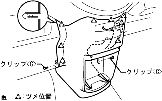

Airbag sensor ASSY installation |
| 1. Airbag sensor ASSY installation |
Confirm that the IG Suitsu is OFF (Lock).
Make sure that the minihana starminal of the combination has been removed.
Use a torx soketsu trench (T40) to attach the airbatsu -sensor ASSY CTR with four torx bolts.
Connect the sensor connector.
Confirm that there is no rattling in the sensor Assessy.
Check that the drip -proof sheet is flipped up or bleeding.
Do not use droppings.
Do not apply or force the sensor.
| 2. Air duct RR No.2 connection |
| 3. Air duct RR No.1 connection |
| 4. Installation panel finish panel LWR CTR installation |
|  |
Attach the instrument cup holder with three screws.
Connect the connector of the power outlet socket.
Combine the eight claws and attach the instrument panel finish panel LWR CTR with two clips <c>.
| 5. Battery minor Starminal connection |
| 6. Airbag Warnin Grand Point Inspection |
reference)